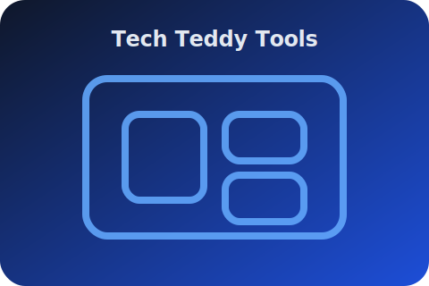

🚀 Sofort-Ergebnisse
📱 Mobile-first
🇩🇪 Made for DACH
Rechner, Konverter & Generatoren – ohne Installation, jederzeit bereit
Tech Teddy liefert dir 100 % statische Tools für Schule, Büro, Handwerk und Alltagsshopping. Lade die Dateien auf deinen GitHub-Pages-Account oder klassischen Webspace – fertig.

Direkt im Browser, ohne Build-Step
Suche nach deinem Tool oder stöbere durch die Cluster. Alle Rechner funktionieren offline, sobald sie im Webspace liegen.
Schnelleinrichtung für GitHub Pages
- Repository erstellen und diese Dateien hochladen.
- Unter Settings → Pages den Hauptbranch als Quelle wählen.
- Die Seite ist wenige Minuten später weltweit erreichbar.
Klassisches Webhosting (z. B. IONOS)
Einfach den Ordner via FTP hochladen. Es ist kein Node.js oder Build-Prozess notwendig – reine HTML, CSS & JS-Dateien.
Tipp: Für HTTPS sorgt Let’s Encrypt oder die integrierte Zertifikatsverwaltung deines Hosters.